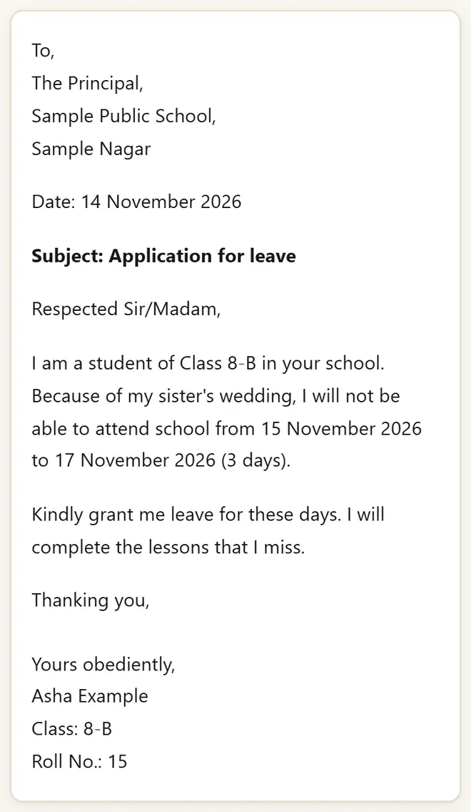

விடுப்பு விண்ணப்ப வடிவம்: பள்ளி, அலுவலகம், உடல்நலக்குறைவு விடுப்பு
விடுப்பு விண்ணப்பத்துக்கு ஒரு நிலையான அமைப்பு உண்டு: யாருக்கு எழுதுகிறீர்கள், பொருள், தேதிகள், காரணம், உங்கள் பெயர். இந்த இலவசச் செயலி அந்தப் பகுதிகளைத் தமிழ், ஆங்கிலம், இந்தி அல்லது 12 மொழிகளில் எதிலும் சரியான வரிசையில் அமைத்துத் தருகிறது. நீங்கள் உங்கள் விவரங்களை மட்டும் எழுதினால் போதும்.
சுருக்கமான பதில்
விண்ணப்பம் மற்றும் கடிதம் எழுதி திறந்து, “கடித வகை” என்பதில் தேர்ந்தெடுங்கள்: “விடுப்பு விண்ணப்பம் (பள்ளி)”, “விடுப்பு விண்ணப்பம் (கல்லூரி)”, “விடுப்பு விண்ணப்பம் (அலுவலகம்)” அல்லது “மருத்துவ விடுப்பு”. உங்கள் பெயர், பள்ளி அல்லது அலுவலகத்தின் பெயர், தேதிகள், சில சொற்களில் காரணம் ஆகியவற்றை எழுதுங்கள். கடிதத்தை ஒருமுறை படித்துவிட்டு “நகலெடு” அல்லது “அச்சிடு அல்லது PDF ஆகச் சேமி” அழுத்துங்கள்.
5 படிகளில் விடுப்பு விண்ணப்பம்
-
விடுப்பின் வகையைத் தேர்ந்தெடுங்கள்
விண்ணப்பம் மற்றும் கடிதம் எழுதி திறங்கள். வடிவத்தைப் பார்க்க வசதியாக, கற்பனை விவரங்கள் கொண்ட ஒரு மாதிரிக் கடிதத்துடன் அது திறக்கும். “கடித வகை” என்பதில் “விடுப்பு விண்ணப்பம் (பள்ளி)”, “விடுப்பு விண்ணப்பம் (கல்லூரி)”, “விடுப்பு விண்ணப்பம் (அலுவலகம்)” அல்லது “மருத்துவ விடுப்பு” தேர்ந்தெடுங்கள். அதன் பிறகு அந்தக் கடிதத்துக்குத் தேவையான விவரங்கள் மட்டுமே படிவத்தில் தெரியும்.

கடித வகையைத் தேர்ந்தெடுத்து, சில விவரங்களை நிரப்புங்கள். -
கடிதத்தின் மொழியைத் தேர்ந்தெடுங்கள்
“கடித மொழி” என்பதில் தமிழ், ஆங்கிலம், இந்தி அல்லது 12 மொழிகளில் ஏதேனும் ஒன்றைத் தேர்ந்தெடுங்கள். செயலி உங்கள் சொந்த மொழியிலேயே இருக்கலாம். உங்கள் விவரங்களைக் கடிதத்தின் மொழியில் எழுதுங்கள்: நீங்கள் எழுதுவது அப்படியே பயன்படும், மொழிபெயர்க்கப்படாது.
-
உங்கள் விவரங்களை நிரப்புங்கள்
உங்கள் பெயர், கடிதம் யாருக்குச் செல்கிறதோ அவருடைய பதவி (தலைமையாசிரியர் அல்லது மேலாளர் போன்றவை), பள்ளி அல்லது அலுவலகத்தின் பெயர், உங்கள் ஊர் ஆகியவற்றை எழுதுங்கள். மாணவர்கள் வகுப்பையும் வரிசை எண்ணையும் எழுத வேண்டும்; பணியாளர்கள் தங்கள் பதவியை எழுத வேண்டும்.
-
தேதிகளையும் காரணத்தையும் எழுதுங்கள்
“விடுப்பு தொடங்கும் நாள்”, “விடுப்பு முடியும் நாள்” ஆகியவற்றில் தேதிகளைத் தேர்ந்தெடுங்கள்: கடிதம் நாட்களைத் தானாகவே கணக்கிடும். காரணத்தைச் சில எளிய சொற்களில் எழுதுங்கள்; எடுத்துக்காட்டாக, காய்ச்சல் அல்லது அக்காவின் திருமணம். அது வாக்கியத்தில் தானாகவே பொருந்திவிடும். எப்போதும் உண்மையான காரணத்தையே எழுதுங்கள்.
-
படித்துவிட்டு நகலெடுங்கள் அல்லது அச்சிடுங்கள்
கடிதத்தை ஒருமுறை படியுங்கள். “நகலெடு” அழுத்தி அதை WhatsApp அல்லது மின்னஞ்சலில் ஒட்டுங்கள்; அங்கே எந்தச் சொல்லையும் மாற்றிக்கொள்ளலாம். காகிதத்தில் அல்லது PDF ஆக வேண்டுமென்றால் “அச்சிடு அல்லது PDF ஆகச் சேமி” அழுத்துங்கள் (அச்சு சாளரத்தில் Save as PDF தேர்ந்தெடுங்கள்); உரைக் கோப்புக்கு “உரைக் கோப்பாகப் பதிவிறக்கு”.

தயாரான விடுப்பு விண்ணப்பம், நகலெடுக்க அல்லது அச்சிட.
நல்ல விடுப்பு விண்ணப்பத்தில் என்ன இருக்கும்
- அதன் பகுதிகள்: யாருக்கு எழுதப்படுகிறது, தேதி, பொருள், விளிப்பு, தேதிகளுடன் காரணம், நன்றி சொல்லும் ஒரு வரி, உங்கள் பெயர், அதனுடன் வகுப்பும் வரிசை எண்ணும் அல்லது உங்கள் பதவி.
- சுருக்கமாக எழுதுங்கள். இரண்டு சிறிய பத்திகள் போதும்: விடுப்பு ஏன் தேவை, எந்தத் தேதிகளுக்கு, பணிவான வேண்டுகோள்.
- கடிதத்தில் ________ போன்ற கோடு இருந்தால் அந்த விவரம் காலியாக உள்ளது என்று பொருள். அதைப் படிவத்தில் நிரப்புங்கள், அல்லது கடிதத்தை அச்சிட்டுப் பேனாவால் எழுதுங்கள். விரும்பினால் உங்கள் கைப்பேசி எண்ணையும் சேர்க்கலாம்.
- விடுப்பு விதிகள் ஒவ்வொரு பள்ளியிலும் அலுவலகத்திலும் வேறுபடும். சில இடங்களில் பெற்றோரின் கையொப்பம் தேவை, சில இடங்களில் மருத்துவரின் சான்றிதழ் தேவை. எனவே என்ன தேவை என்று வகுப்பாசிரியரிடம் அல்லது அலுவலகத்தில் கேட்டுக்கொள்ளுங்கள்.
புதிய இலவசக் கருவிகளும் இந்தியில் AI பாடங்களும் பெறுங்கள்
எங்கள் மின்னஞ்சல் பட்டியலில் சேருங்கள்: புதிய இலவசச் செயலிகள், புதிய வழிகாட்டிகள், AI பற்றிய இந்தி வீடியோ பாடங்கள் பற்றிய தகவல் உங்களுக்கு வரும். ஸ்பேம் இல்லை.
பெரியவர்களுக்கு (18+) மட்டும். எப்போது வேண்டுமானாலும் விலகலாம்.
இந்தக் கருவிகளை ஏன் பரிந்துரைக்கிறோம்
- அனைவருக்கும் இலவசம்: விளம்பரம் இல்லை, பதிவு இல்லை, கட்டணத் திட்டம் இல்லை.
- தனிப்பட்டது: உங்கள் கோப்புகளும் விவரங்களும் உங்கள் சொந்தச் சாதனத்திலேயே இருக்கும்.
- போன், லேப்டாப் அல்லது ஸ்மார்ட்போர்டில் இயங்கும், ஒருமுறை திறந்த பின் இணையம் இல்லாமலும்.
- தமிழ், இந்தி உட்பட 12 மொழிகளில்.
வீடியோவில் கற்க விருப்பமா? எங்கள் YouTube சேனலில் AI மற்றும் இலவசக் கருவிகள் பற்றிய இந்திப் பாடங்களைப் பாருங்கள்.
அடிக்கடி கேட்கப்படும் கேள்விகள்
பள்ளிக்கு விடுப்பு விண்ணப்பம் எப்படி எழுதுவது?
தலைமையாசிரியர் அல்லது வகுப்பாசிரியருக்கு முகவரியிட்டு எழுதுங்கள், பொருளை எழுதுங்கள், ஒன்றிரண்டு வாக்கியங்களில் காரணத்தையும் தேதிகளையும் சொல்லுங்கள், இறுதியில் உங்கள் பெயர், வகுப்பு, வரிசை எண் ஆகியவற்றை எழுதுங்கள். செயலியில் “விடுப்பு விண்ணப்பம் (பள்ளி)” தேர்ந்தெடுத்து இந்த விவரங்களை நிரப்புங்கள்.
விடுப்பு விண்ணப்பம் இந்தியில் கிடைக்குமா?
ஆம். “கடித மொழி” என்பதில் இந்தியைத் தேர்ந்தெடுத்து, உங்கள் விவரங்களை இந்தியில் எழுதுங்கள். கடிதம் தமிழ், ஆங்கிலம், வங்காளம், மராத்தி, குஜராத்தி, பஞ்சாபி, ஒடியா, தெலுங்கு, கன்னடம், மலையாளம், உருது ஆகியவற்றிலும் தயாராகக் கிடைக்கும்.
உடல்நலக்குறைவு விடுப்பு விண்ணப்பம் எப்படி எழுதுவது?
“மருத்துவ விடுப்பு” தேர்ந்தெடுத்து, நோயை ஒன்றிரண்டு சொற்களில் எழுதுங்கள் (காய்ச்சல் போன்றவை), தேதிகளைத் தேர்ந்தெடுங்கள். உங்களுக்கு உடல்நலம் சரியில்லை என்றும் அந்த நாட்களுக்கு விடுப்பு தேவை என்றும் கடிதத்தில் வரும். உடல்நலம் சரியில்லாத மாணவருக்கு “விடுப்பு விண்ணப்பம் (பள்ளி)” தேர்ந்தெடுத்து, காரணமாக நோயை எழுதுங்கள்.
விடுப்பு விண்ணப்பத்தை WhatsApp அல்லது மின்னஞ்சலில் அனுப்பலாமா?
ஆம். “நகலெடு” அழுத்தி, கடிதத்தை WhatsApp அல்லது மின்னஞ்சலில் ஒட்டுங்கள். பள்ளி அல்லது அலுவலகம் காகிதத்தில் கேட்டால், “அச்சிடு அல்லது PDF ஆகச் சேமி” அழுத்தி, கையால் கையொப்பமிடுங்கள்.
இது இலவசமா? என் விவரங்கள் எங்காவது சேமிக்கப்படுகின்றனவா?
இது இலவசம்; பதிவு தேவையில்லை. உங்கள் விவரங்கள் இந்த உலாவியில், உங்கள் சொந்தச் சாதனத்தில் மட்டுமே இருக்கும்; எதுவும் பதிவேற்றப்படாது. “என் விவரங்களை அழி” அவற்றை நீக்கும்.
பயனுள்ளதாக இருந்ததா?
ஒரு நண்பருக்கோ, சக ஊழியர்களுக்கோ, உங்கள் பள்ளியின் WhatsApp குழுவுக்கோ அனுப்புங்கள்.